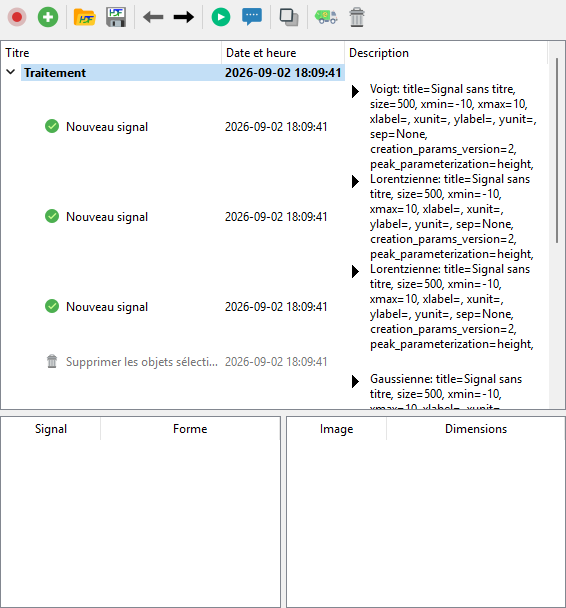
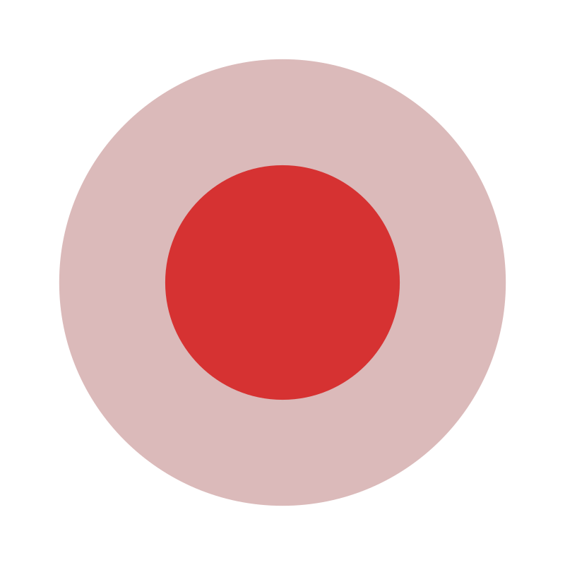

Panneau d’historique#
Vue d’ensemble#
Le « panneau d’historique » enregistre la séquence des actions effectuées par l’utilisateur sur les signaux et les images, organisée en sessions. Chaque session est une liste chronologique constituée soit :
d”actions de l’interface (création d’un nouveau signal, suppression des objets sélectionnés, enregistrement de l’espace de travail au format HDF5, …), soit
de calculs (FFT, moyenne, ajustement gaussien, …) dont l’exécution est confiée à Sigima par les processeurs de DataLab, soit
de mutations (modifications en place d’objets existants, telles que l’édition de régions d’intérêt). Voir Mutations d’objets.
Une session enregistrée peut être :
rejouée silencieusement ou pas à pas. Le rejeu recalcule en place chaque action de calcul avec ses paramètres enregistrés : les objets de sortie existants sont mis à jour, et les sorties supprimées dont l’action fait toujours partie de l’historique sont recréées sous leurs identifiants d’origine, ce qui préserve la validité de la chaîne de traitement en aval. En mode pas à pas, les paramètres peuvent être examinés et modifiés avant le recalcul de chaque étape. Les actions de l’interface enregistrées sont invoquées par leurs propres méthodes et peuvent reproduire leurs effets, notamment créer, importer ou dupliquer des objets ;
dupliquée sous forme de chaînes de traitement indépendantes dans de nouvelles sessions d’historique, les objets signal/image nécessaires étant clonés au cours de l’opération ;
sauvegardée dans un fichier d’historique autonome (
.dlhist) ou intégrée à l’espace de travail lors de l’enregistrement au format HDF5, de sorte que toute la chaîne de traitement accompagne les données.

Le panneau d’historique après l’enregistrement d’une session représentative : création de trois signaux (Voigt, lorentzien, lorentzien), suppression de l’un d’eux, création d’un signal gaussien, calcul de la moyenne, ajout d’un bruit gaussien au résultat et ajustement par une gaussienne.#
Mutations d’objets#
Outre les actions de l’interface et les calculs, le panneau enregistre des mutations : des modifications en place d’objets existants qui ne créent pas de nouveaux objets. Les mutations couvrent actuellement les régions d’intérêt (ROI) : la définition ou l’édition de ROI de manière graphique ou numérique, la suppression d’une ou de toutes les ROI et le collage de ROI enregistrent chacun une entrée de mutation générique unique contenant les objets concernés et l’état de ROI résultant.
Le rejeu d’une mutation réapplique l’état de ROI enregistré à ses objets cibles (un état vide supprime les ROI). En mode pas à pas, les paramètres des ROI peuvent être examinés et modifiés dans une boîte de dialogue avant d’être réappliqués ; leur modification déclenche un recalcul des calculs dépendants en aval.
Lorsqu’une action recalculée recrée ou met à jour un objet, les mutations enregistrées sur cet objet sont réappliquées dans l’ordre, et les analyses dépendant de l’objet muté sont recalculées. Les ROI définies par l’utilisateur sur un objet de sortie sont préservées par les recalculs en place, sauf si le recalcul produit lui-même une ROI.
Les entrées de mutation sont sauvegardées avec les sessions (fichiers .dlhist autonomes et espaces de travail HDF5) comme toute autre action ; les fichiers d’historique créés avec des versions antérieures de DataLab se chargent sans modification.
Enregistrement et cycle de vie des sessions#
Les actions ne sont enregistrées que lorsque le Mode d’enregistrement est activé. Sa désactivation conserve les sessions existantes, mais n’ajoute aucune nouvelle entrée.
There is a single active recording session, shared by the Signals and Images panels. New actions from both panels are chained into that session (one is created on first use), so mixed signal/image pipelines are recorded together and recording resumes in the user-selected session. Each session remains associated with the Signals or Images panel for display purposes, through the actions it contains.
Lorsqu’un nouvel objet est créé ou qu’un fichier est chargé dans une session active non vide, une politique configurable détermine si DataLab demande quoi faire, démarre une nouvelle session ou continue dans la session courante. Des politiques distinctes s’appliquent aux objets créés par des plugins. Une portée explicite de chargement multiple par un plugin fournit une politique de session unique et durable pour l’ensemble du lot. Avec le comportement Demander ordinaire, un mécanisme anti-rebond évite les demandes répétées pour les ajouts synchrones au même panneau pendant le tour courant de la boucle d’événements Qt.
Ces options sont disponibles sous Fichier > Préférences > Traitement > Sessions d'historique. Voir Sessions d’historique pour la liste complète des libellés et des valeurs par défaut.
Barre d’outils#
La barre d’outils en haut du panneau expose les actions suivantes :

Mode d’enregistrement : active ou désactive l’enregistrement des nouvelles actions. Lorsqu’il est désactivé, aucune nouvelle entrée n’est ajoutée à l’historique (les sessions existantes sont conservées). New session: start a new history session and make it the
active recording session.
New session: start a new history session and make it the
active recording session. Ouvrir un fichier d’historique : charge des sessions enregistrées depuis un fichier
Ouvrir un fichier d’historique : charge des sessions enregistrées depuis un fichier .dlhistautonome. Enregistrer un fichier d’historique : enregistre les sessions actuellement enregistrées dans un fichier
Enregistrer un fichier d’historique : enregistre les sessions actuellement enregistrées dans un fichier .dlhistautonome.Étape précédente : sélectionne l’action précédente dans la session courante (raccourci clavier : Ctrl+Gauche).
Étape suivante : sélectionne l’action suivante dans la session courante (raccourci clavier : Ctrl+Droite).
 Replay: recompute the selection in place, silently (no
parameter dialogs). Selecting an action replays that action; selecting a
session replays all of its actions. A selection spanning several actions or
sessions is merged, deduplicated and executed in session order. Each
computation action re-runs with its recorded parameters and updates its
existing output object(s), keeping the same identifiers so that downstream
steps remain valid. Outputs that were deleted from the data panel are
re-created under their original identifiers (a typical workflow: delete a
bad result, edit its parameters, then replay to regenerate it). Actions
whose source objects no longer exist are skipped with a warning, and a
failed action blocks its downstream branch. Actions whose parameters were
changed (in step-by-step mode or from the Processing tab) are marked as
outdated; replaying recomputes them and, when parameters were edited, their
downstream dependent actions as well. Analysis actions replay by
recomputing their results on the source objects: each analysis records
which results it stored on the object (its effects), so replaying
updates exactly those results — previous values are replaced, and if the
recompute fails the previous results are restored. Analyses recorded with
earlier versions of DataLab replay using their saved state. UI actions
are replayed by invoking their recorded method and may reproduce side
effects, including creating, importing, or duplicating objects; load
actions reload their objects even if these were deleted after being
recorded. Recorded destructive actions (e.g. object removals) are skipped
with a warning whenever replaying them would be unsafe: when their
captured state no longer matches the current workspace, when their targets
were re-created earlier in the same replay, or when their targets belong
to another session. As a consequence, a replayed session may intentionally
not reproduce a recorded end state that included such deletions.
Replay: recompute the selection in place, silently (no
parameter dialogs). Selecting an action replays that action; selecting a
session replays all of its actions. A selection spanning several actions or
sessions is merged, deduplicated and executed in session order. Each
computation action re-runs with its recorded parameters and updates its
existing output object(s), keeping the same identifiers so that downstream
steps remain valid. Outputs that were deleted from the data panel are
re-created under their original identifiers (a typical workflow: delete a
bad result, edit its parameters, then replay to regenerate it). Actions
whose source objects no longer exist are skipped with a warning, and a
failed action blocks its downstream branch. Actions whose parameters were
changed (in step-by-step mode or from the Processing tab) are marked as
outdated; replaying recomputes them and, when parameters were edited, their
downstream dependent actions as well. Analysis actions replay by
recomputing their results on the source objects: each analysis records
which results it stored on the object (its effects), so replaying
updates exactly those results — previous values are replaced, and if the
recompute fails the previous results are restored. Analyses recorded with
earlier versions of DataLab replay using their saved state. UI actions
are replayed by invoking their recorded method and may reproduce side
effects, including creating, importing, or duplicating objects; load
actions reload their objects even if these were deleted after being
recorded. Recorded destructive actions (e.g. object removals) are skipped
with a warning whenever replaying them would be unsafe: when their
captured state no longer matches the current workspace, when their targets
were re-created earlier in the same replay, or when their targets belong
to another session. As a consequence, a replayed session may intentionally
not reproduce a recorded end state that included such deletions.Pas à pas : rejoue la même sélection étape par étape, en ouvrant la boîte de dialogue des paramètres pour chaque action prise en charge (création d’objet, calcul, extraction de ROI) avant de la recalculer. Les modifications acceptées se propagent aux actions dépendantes en aval, qui sont également recalculées. L’annulation d’une boîte de dialogue interrompt le rejeu, restaure les modifications de paramètres effectuées durant cette exécution et recalcule silencieusement les actions restées obsolètes afin que la chaîne reste à jour.
Duplicate: duplicate the processing chain containing each selected action, or the processing chains in each selected session. DataLab clones the required objects and creates independent history sessions. The duplicate is a standalone deep copy of the chain — as if the recorded operations had been redone by hand on the cloned objects — so replaying either the original or the duplicated session only affects its own objects.
 Supprimer les actions incompatibles : supprime toutes les actions dont l’état de l’espace de travail n’est plus compatible avec l’espace de travail actuel. Une boîte de dialogue de confirmation indique combien d’actions seront supprimées.
Supprimer les actions incompatibles : supprime toutes les actions dont l’état de l’espace de travail n’est plus compatible avec l’espace de travail actuel. Une boîte de dialogue de confirmation indique combien d’actions seront supprimées. Delete: remove the selected actions or sessions from the
history (keyboard shortcut: Del, active only while the history tree
has focus, so it never deletes signal or image objects instead). Removing
an intermediate action splices it out and preserves its downstream steps
as an independent chain.
Delete: remove the selected actions or sessions from the
history (keyboard shortcut: Del, active only while the history tree
has focus, so it never deletes signal or image objects instead). Removing
an intermediate action splices it out and preserves its downstream steps
as an independent chain.
Note
Un double-clic sur un élément de l’arborescence déclenche Rejouer pour la sélection courante, avec la même sémantique de recalcul en place que celle documentée ci-dessus.
Note
While a replay or recompute is in progress, History Panel commands are unavailable: the toolbar actions are disabled, and tree interactions (context menu, double-click, Del key) are ignored until the run completes.
Arborescence#
L’arborescence organise les actions enregistrées dans des sessions dépliables :
Each top-level row is a session; the panel(s) it relates to are determined by the actions it contains. Sessions may be started when recording is enabled, with New session, or according to the configured session policy.
Chaque ligne enfant est une action, accompagnée de son titre, de sa date et de son heure, ainsi que d’une description résumant ses paramètres ou l’appel résolu lorsqu’ils sont disponibles. Une action de l’interface dont l’appel ne peut pas être résolu peut avoir une description vide.
La sélection d’une ou de plusieurs lignes détermine les entrées ciblées par les commandes de la barre d’outils et du menu contextuel. Le menu contextuel propose les mêmes commandes que la barre d’outils.
Lorsqu’une ligne d’action est sélectionnée, son objet résultat est sélectionné dans le panneau de données correspondant s’il est disponible ; sinon, ses objets d’entrée existants sont sélectionnés. DataLab bascule ensuite vers ce panneau de données.
While Record mode is enabled, selecting a session row (or one of its actions) makes that session the active recording session.
Actions that are not compatible with the current workspace state (for example because a referenced object identifier no longer exists, or because its data array shape changed) are shown with a disabled foreground and an explanatory tooltip. Attempting to replay them opens the broken chain resolution dialog described below.
Actions left outdated by a failed or interrupted recompute, or by parameter edits whose propagation to downstream steps is still pending, are highlighted with an amber background and carry an explanatory tooltip. Replaying them refreshes their result and clears the marker.
Broken chain resolution#
Starting Replay or Step-by-step (or double-clicking a tree item) on a selection containing actions that are incompatible with the current workspace — typically because the objects they rely on were deleted — opens a resolution dialog. Two choices are offered:
Repair and continue: the broken actions and all their downstream descendants are removed from the history, then the remaining valid actions of the selection are replayed.
Cancel: nothing is modified, neither the history nor the workspace. The dialog is shown again on the next replay attempt until the chain is repaired.
Affichage de l’état de l’espace de travail#
Sous l’arborescence des actions, un widget en vue divisée affiche l”état de l’espace de travail tel qu’il était au moment de l’action sélectionnée :
Tableau de gauche : liste les signaux qui étaient sélectionnés, avec la forme de leur tableau.
Tableau de droite : liste les images qui étaient sélectionnées, avec leurs dimensions.
Ces informations aident l’utilisateur à comprendre le contexte dans lequel chaque action a été exécutée à l’origine et à diagnostiquer les problèmes de compatibilité lors du rejeu de la sélection actuelle.
Persistance#
L’historique peut être enregistré de deux manières complémentaires :
Intégré à l’espace de travail : lorsque l’espace de travail est enregistré au format HDF5 (
Fichier > Enregistrer dans un fichier HDF5), le contenu du panneau d’historique est automatiquement sauvegardé aux côtés des signaux et des images. Le rechargement de l’espace de travail restaure les sessions enregistrées.Fichier d’historique autonome (
.dlhist) : le fichier embarque à la fois les sessions enregistrées et tous les objets actuellement présents dans les panneaux Signaux et Images, qu’une action y fasse référence ou non. Le fichier est ainsi entièrement autonome :L’ouverture d’un fichier
.dlhistdans un espace de travail vierge (sans objet de données ni session d’historique existante) restaure directement les objets et les sessions enregistrés.Si l’espace de travail est déjà utilisé (il contient un objet de données ou une session d’historique), DataLab importe les objets dans de nouveaux groupes signal/image, réaffecte leurs identifiants afin d’éviter les collisions et ajoute les sessions d’historique importées qui référencent ces nouveaux identifiants.
Note
A history entry whose saved parameters can no longer be decoded (for example a ROI payload written by an incompatible version of DataLab) does not prevent the rest of the file from loading: the affected action is loaded as incompatible — shown as a disabled row with an explanatory tooltip, and never replayed — while all other sessions and actions load normally. Such entries can be cleaned up with Remove incompatible.
Avertissement
Le rejeu d’une session qui dépend de fichiers externes (par exemple l’ouverture d’un jeu de données depuis le disque) ne réussira que si ces fichiers sont toujours disponibles aux mêmes emplacements qu’au moment de l’enregistrement de la session.
Reconnexion de la chaîne lors d’une suppression#
Lorsqu’un objet résultat est supprimé depuis le panneau signal ou image (et non depuis l’arborescence du panneau d’historique), et que cet objet a été produit par une étape de traitement enregistrée, le panneau d’historique reconnecte automatiquement la chaîne de traitement :
Toutes les étapes aval qui consommaient l’objet supprimé sont recâblées pour utiliser la source de l’étape supprimée comme nouvelle entrée.
Pour les opérations
2_to_1(par exemple différence), la première source est utilisée pour la reconnexion.Si aucune source valide ne peut être déterminée (par exemple la source elle-même a déjà été supprimée), un avertissement est affiché listant les opérations non reconnectables, mais la suppression est néanmoins autorisée.
Ce comportement reproduit la suppression d’un maillon d’une chaîne : les maillons adjacents se reconnectent pour préserver le flux de traitement.
Note
La reconnexion n’est déclenchée que par les suppressions effectuées depuis les panneaux Signaux ou Images. La suppression d’une action directement depuis l’arborescence du panneau d’historique suit un autre comportement : l’action sélectionnée est retirée de la chaîne au lieu de tronquer la session. Si des étapes en aval en dépendent, DataLab les conserve sous forme de chaîne indépendante en clonant l’objet intermédiaire nécessaire et en reconnectant ces étapes au clone. La suppression d’une session supprime cette session dans son intégralité.
Recalcul automatique#
Note
Lorsqu’un objet résultat est sélectionné dans le panneau signal/image et qu’il possède des paramètres de traitement (c’est-à-dire qu’il a été produit par un calcul 1-à-1), un onglet Traitement apparaît dans le panneau Propriétés. Cocher Recalcul automatique lors de l’édition dans cet onglet relancera automatiquement le calcul 300 ms après toute modification d’un paramètre.